Reception counter, configured live
Finishes, glass, logo, height on a 10 cm slider, sockets, LED and the room around it change on screen. A live three.js scene with soft shadows, plus a pre-rendered mode for computers without a graphics card. Built from the maker's 2D renders, with no 3D source files.
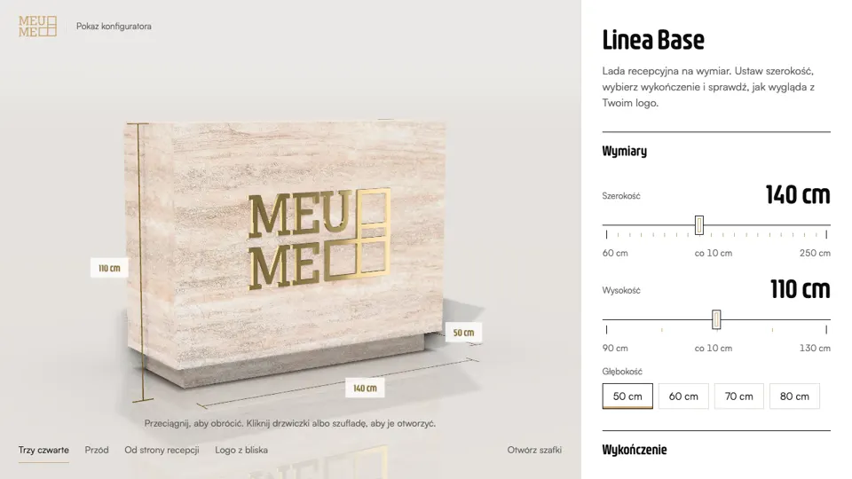
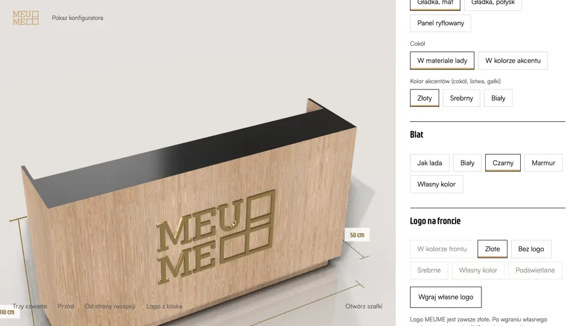
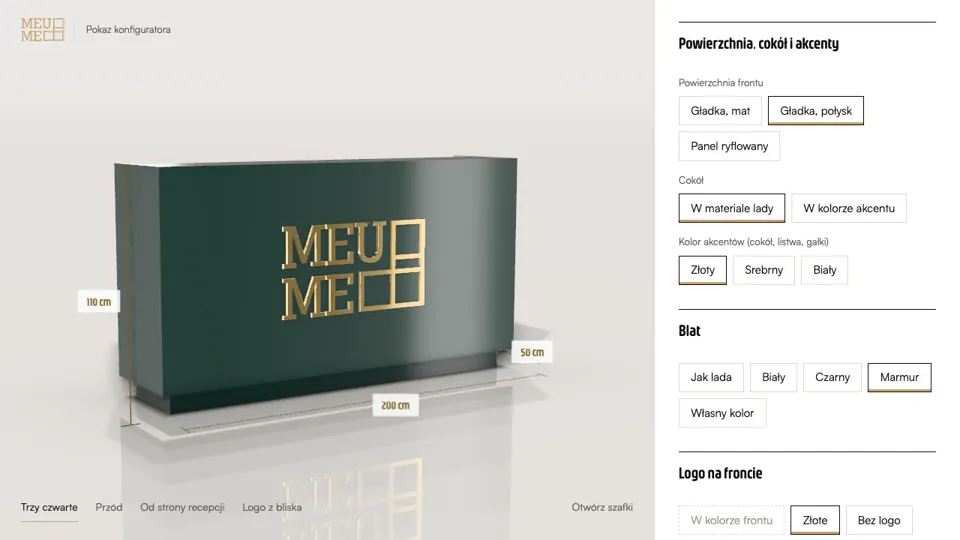
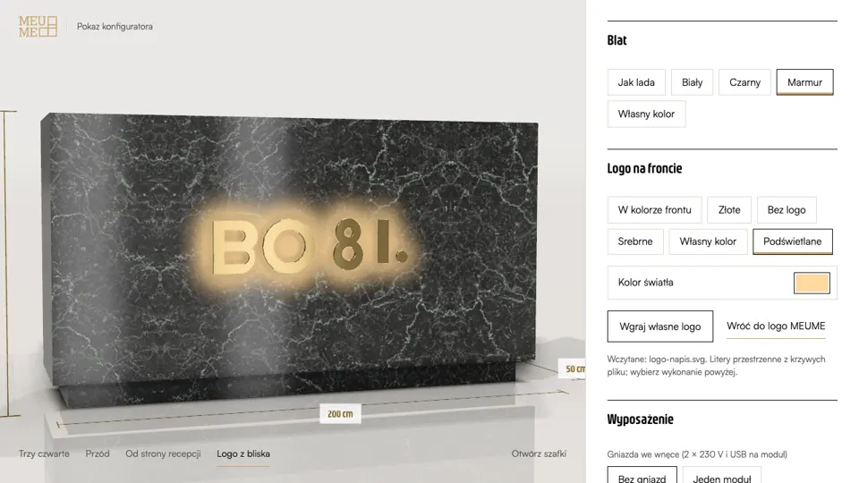
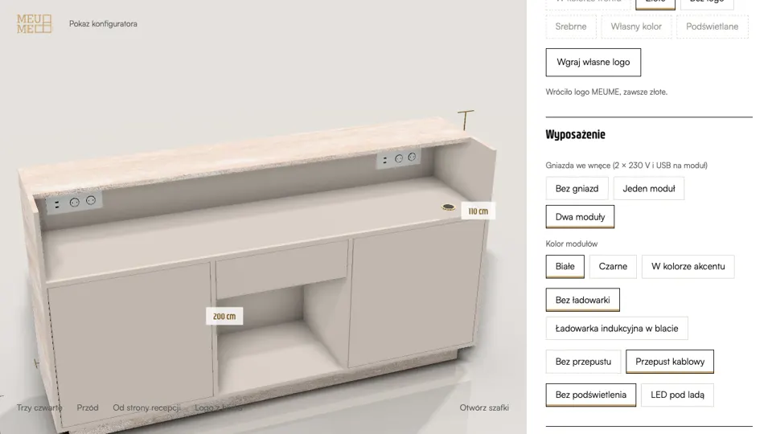
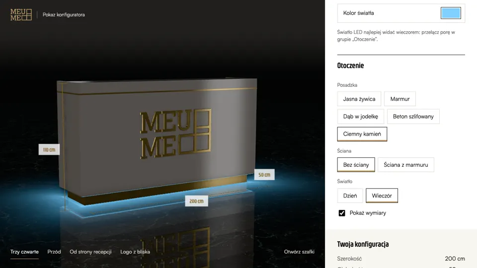
A timber house you walk through and price
One scroll goes from the foundation slab to the living room. Along the way the visitor sees each build stage with its materials and cost, then changes the sofa, kitchen, floor, cladding and roof. The price and the payment schedule update with every choice, and the configuration saves into a link.
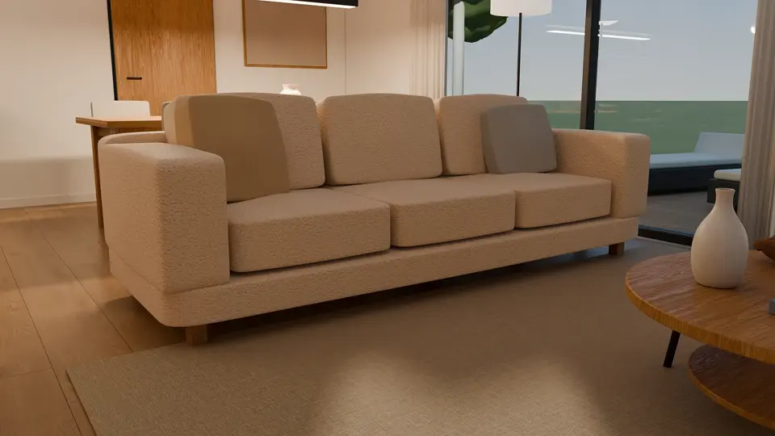
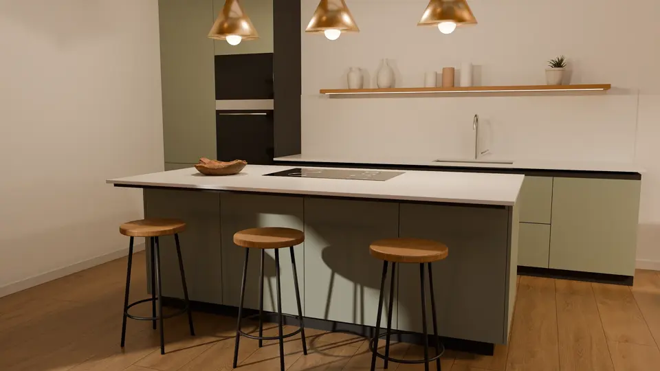
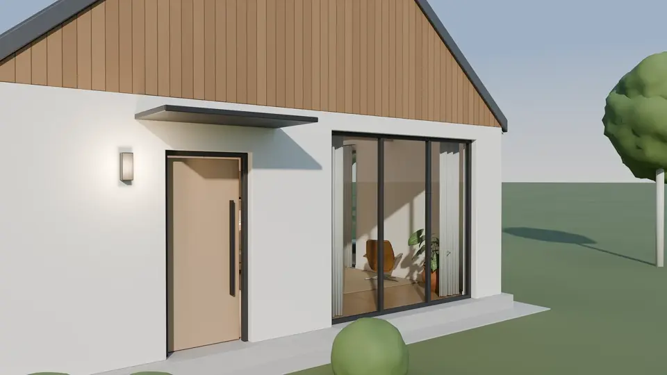
An electric bike that assembles itself as you scroll
An exploded view for a product page: parts come together while the visitor scrolls, then the finished bike turns on a stand. Modelled from the maker’s photos.
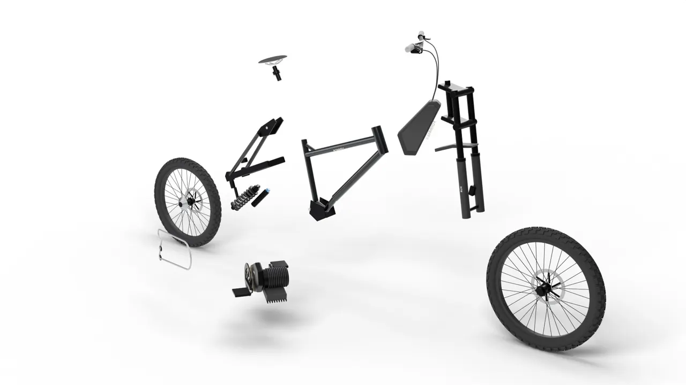
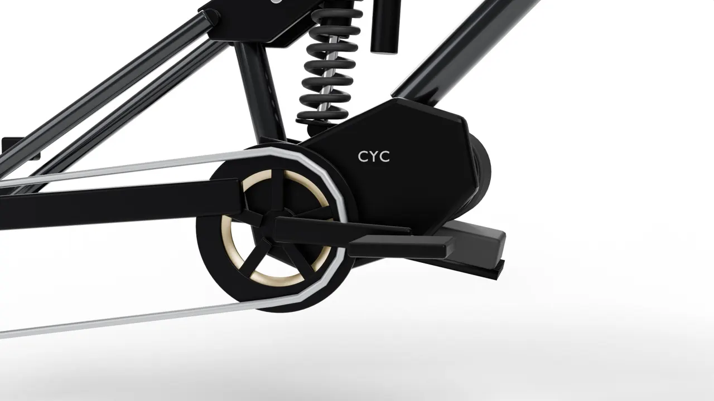
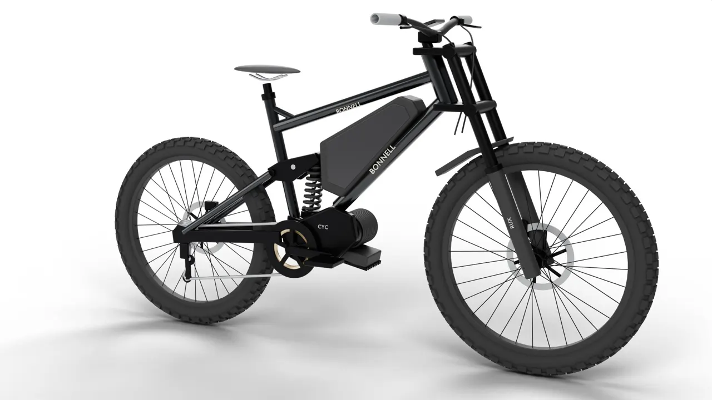
From what you already have
- CAD or GLB files, catalogue renders, or product photos. No new shoot unless one is needed.
- Real changes to the shape, not swapped photos: sizes on a slider, other parts, your own materials.
- Runs on phones and on computers without a graphics card.
- On request: price on screen, a saved-configuration link, an enquiry form, AR in the room via a QR code.
- Fixed price agreed before work starts. No monthly licence; the code is yours.
Websites, search, ads and measurement
The other half of the work: sites and shops judged by enquiries, Google Ads that follow enquiries rather than clicks, and tracking that counts every call, form and order once.